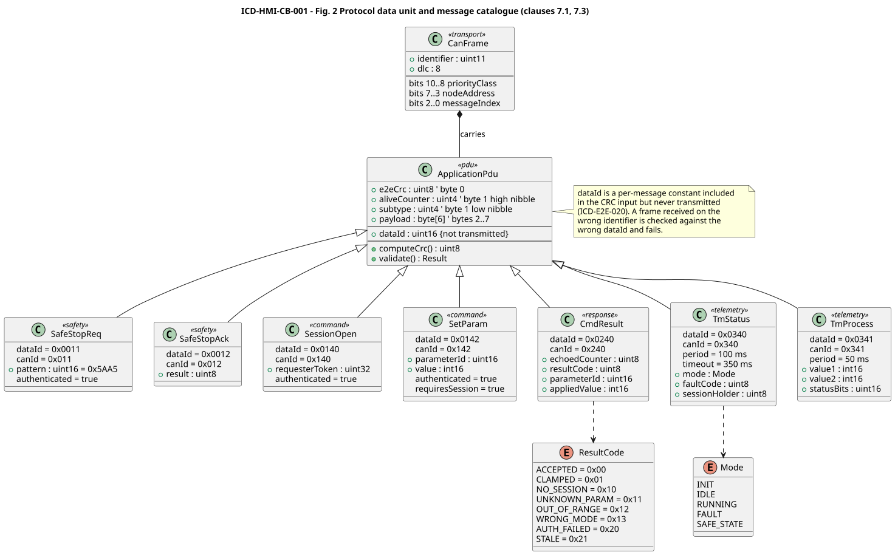
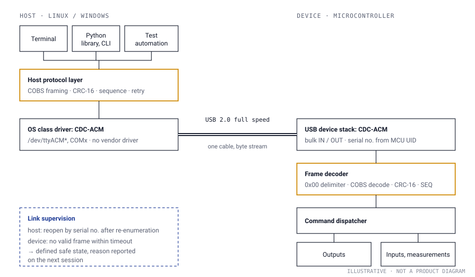
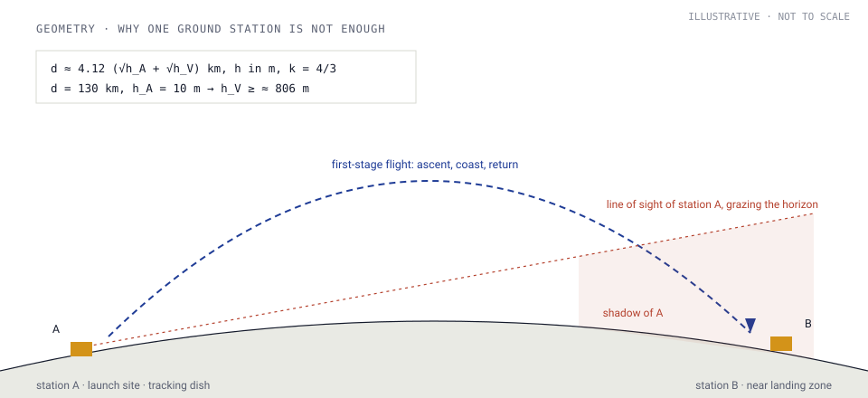
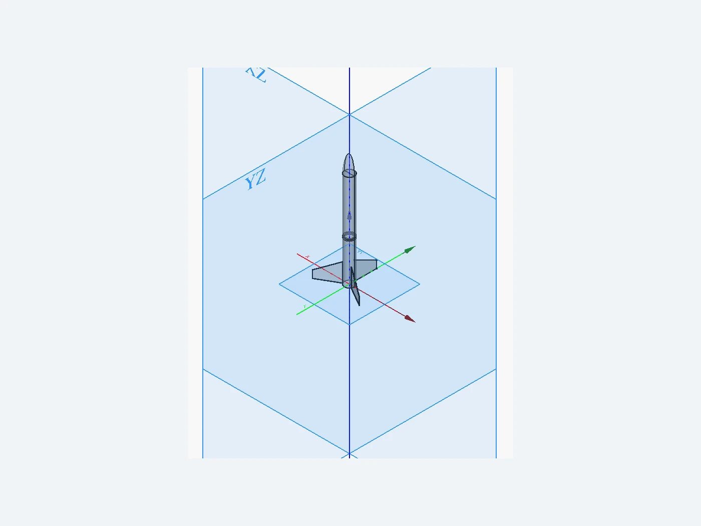
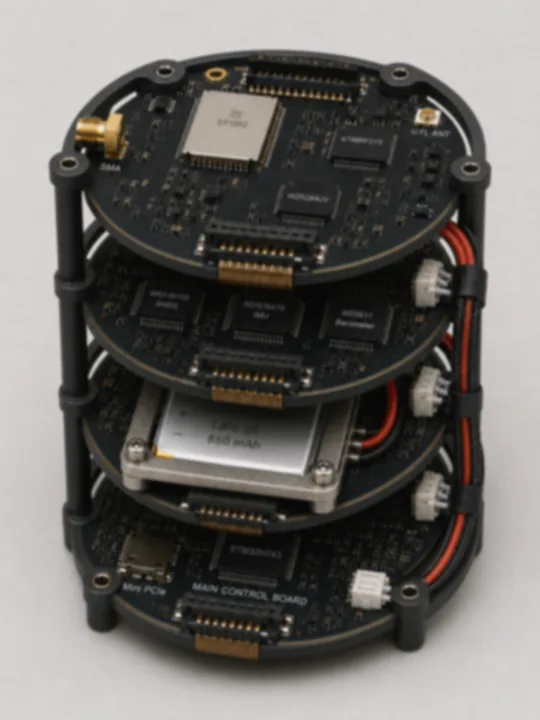
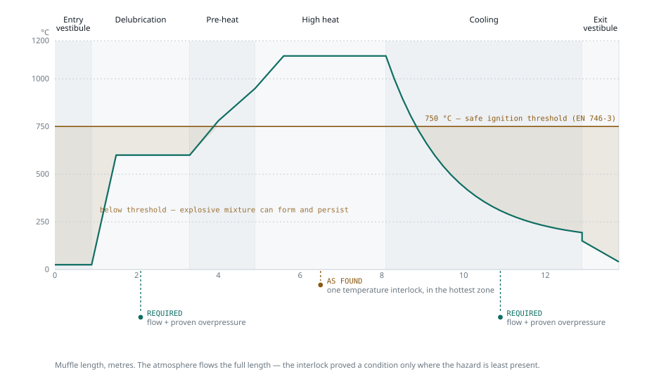
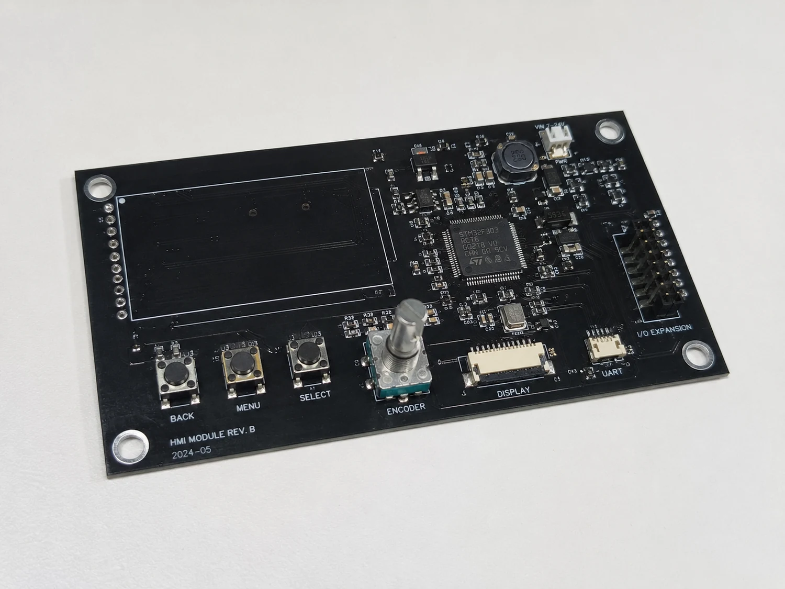
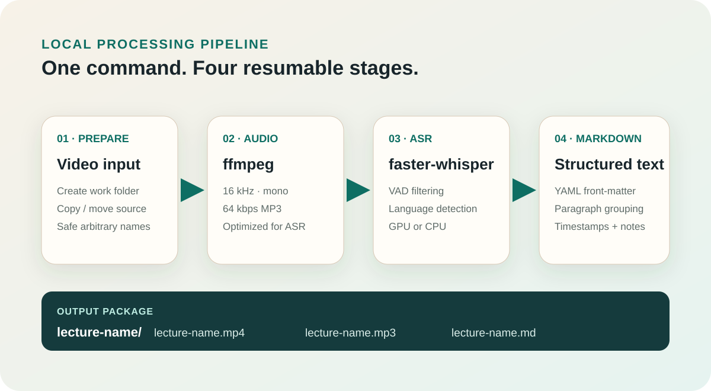

Selected work
Eight examples of the work we focus on: interface specifications for CAN, USB and radio links, system descriptions and requirements, embedded Linux and firmware, and models that answer design questions early.
About these cases. Descriptions are deliberately general. Client names, product identifiers and sensitive values are omitted or changed, and some images are softened. Two cases are public references written on synthetic systems to show our documentation standard; they are marked as such.

CAN interface specification: operator panel and process controller
Interface control document excerpt: system description, requirements with verification methods, CAN identifier plan, PDU layout, message catalogue, timing budget, error handling and test matrix.

USB CDC interface specification: PC and bench controller
Interface specification excerpt: system description, requirements, CDC-ACM transport, COBS framing with CRC-16, message catalogue with real byte examples, session state machine, timing and test matrix.

Telemetry specification for first-stage hop tests at 130 km
Specification excerpt for a test-range telemetry downlink: system description, requirements, link budget and radio horizon, transfer frame and virtual channels, five layers against data loss, UML behaviour, test matrix.

Compact rocket platform: models before metal
System baseline, motor-burn and flight models in MATLAB/Simulink, FreeCAD layout and a quick physical prototype for a 40 cm platform: open design questions answered before detailed work.

Linux compute layer inside a compact control stack
Linux services (SSH, logs, configuration, updates) added inside an existing stack on an i.MX93 board with Alpine Linux, while real-time loops stay on the microcontrollers.

Requirements baseline for a continuous sintering furnace
From process hazards to 68 allocated, verifiable requirements for a furnace with an N₂/H₂ atmosphere. A public reference built on a synthetic line.

HMI and control module for an industrial vibratory feeder
Local operator menu, CAN communication with feeder peripherals, diagnostics and event logging on one MCU module.

Local speech-to-document pipeline
Recorded lectures become reviewed course notes: Whisper transcription, structured notes from a small language model, a privacy pass, and publication only after a person approves.